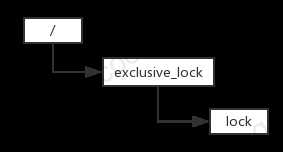

1. 背景
最近在学习 Zookeeper，在刚开始接触 Zookeeper 的时候，完全不知道 Zookeeper 有什么用。且很多资料都是将 Zookeeper 描述成一个“类 Unix/Linux 文件系统”的中间件，导致我很难将类 Unix/Linux 文件系统的 Zookeeper 和分布式应用联系在一起。后来在粗读了《ZooKeeper 分布式过程协同技术详解》和《从Paxos到Zookeeper 分布式一致性原理与实践》两本书，并动手写了一些 CURD demo 后，初步对 Zookeeper 有了一定的了解。不过比较肤浅，为了进一步加深对 Zookeeper 的认识，我利用空闲时间编写了本篇文章对应的 demo -- 基于 Zookeeper 的分布式锁实现。通过编写这个分布式锁 demo，使我对 Zookeeper 的 watcher 机制、Zookeeper 的用途等有了更进一步的认识。不过我所编写的分布式锁还是比较简陋的，实现的也不够优美，仅仅是个练习，仅供参考使用。好了，题外话就说到这里，接下来我们就来聊聊基于 Zookeeper 的分布式锁实现。
2. 独占锁和读写锁的实现
在本章，我将分别说明独占锁和读写锁详细的实现过程，并配以相应的流程图帮助大家了解实现的过程。这里先说说独占锁的实现。
2.1 独占锁的实现
独占锁又称排它锁，从字面意思上很容易理解他们的用途。即如果某个操作 O1 对访问资源 R1 的过程加锁，在操作 O1 结束对资源 R1访问前，其他操作不允许访问资源 R1。以上算是对独占锁的简单定义了，那么这段定义在 Zookeeper 的“类 Unix/Linux 文件系统”的结构中是怎样实现的呢？在锁答案前，我们先看张图：

图1 独占锁的 Zookeeper 节点结构
如上图，对于独占锁，我们可以将资源 R1 看做是 lock 节点，操作 O1 访问资源 R1 看做创建 lock 节点，释放资源 R1 看做删除 lock 节点。这样我们就将独占锁的定义对应于具体的 Zookeeper 节点结构，通过创建 lock 节点获取锁，删除节点释放锁。详细的过程如下：
- 多个客户端竞争创建 lock 临时节点
- 其中某个客户端成功创建 lock 节点，其他客户端对 lock 节点设置 watcher
- 持有锁的客户端删除 lock 节点或该客户端崩溃，由 Zookeeper 删除 lock 节点
- 其他客户端获得 lock 节点被删除的通知
- 重复上述4个步骤，直至无客户端在等待获取锁了
上面即独占锁具体的实现步骤，理解起来并不复杂，这里不再赘述。

图2 获取独占锁流程图
2.2 读写锁的实现
说完独占锁的实现，这节来说说读写锁的实现。读写锁包含一个读锁和写锁，操作 O1 对资源 R1 加读锁，且获得了锁，其他操作可同时对资源 R1 设置读锁，进行共享读操作。如果操作 O1 对资源 R1 加写锁，且获得了锁，其他操作再对资源 R1 设置不同类型的锁都会被阻塞。总结来说，读锁具有共享性，而写锁具有排他性。那么在 Zookeeper 中，我们可以用怎样的节点结构实现上面的操作呢？

图3 读写锁的 Zookeeper 节点结构
在 Zookeeper 中，由于读写锁和独占锁的节点结构不同，读写锁的客户端不用再去竞争创建 lock 节点。所以在一开始，所有的客户端都会创建自己的锁节点。如果不出意外，所有的锁节点都能被创建成功，此时锁节点结构如图3所示。之后，客户端从 Zookeeper 端获取 /share_lock 下所有的子节点，并判断自己能否获取锁。如果客户端创建的是读锁节点，获取锁的条件（满足其中一个即可）如下：
- 自己创建的节点序号排在所有其他子节点前面
- 自己创建的节点前面无写锁节点
如果客户端创建的是写锁节点，由于写锁具有排他性。所以获取锁的条件要简单一些，只需确定自己创建的锁节点是否排在其他子节点前面即可。
不同于独占锁，读写锁的实现稍微复杂一下。读写锁有两种实现方式，各有异同，接下来就来说说这两种实现方式。
读写锁的第一种实现
第一种实现是对 /share_lock 节点设置 watcher，当 /share_lock 下的子节点被删除时，未获取锁的客户端收到 /share_lock 子节点变动的通知。在收到通知后，客户端重新判断自己创建的子节点是否可以获取锁，如果失败，再次等待通知。详细流程如下：
- 所有客户端创建自己的锁节点
- 从 Zookeeper 端获取 /share_lock 下所有的子节点，并对 /share_lock 节点设置 watcher
- 判断自己创建的锁节点是否可以获取锁，如果可以，持有锁。否则继续等待
- 持有锁的客户端删除自己的锁节点，其他客户端收到 /share_lock 子节点变动的通知
- 重复步骤2、3、4，直至无客户端在等待获取锁了
上述步骤对于的流程图如下：

图4 获取读写锁实现1流程图
上面获取读写锁流程并不复杂，但却存在性能问题。以图3所示锁节点结构为例，第一个锁节点 host1-W-0000000001 被移除后，Zookeeper 会将 /share_lock 子节点变动的通知分发给所有的客户端。但实际上，该子节点变动通知除了能影响 host2-R-0000000002 节点对应的客户端外，分发给其他客户端则是在做无用功，因为其他客户端即使获取了通知也无法获取锁。所以这里需要做一些优化，优化措施是让客户端只在自己关心的节点被删除时，再去获取锁。
读写锁的第二种实现
在了解读写锁第一种实现的弊端后，我们针对这一实现进行优化。这里客户端不再对 /share_lock 节点进行监视，而只对自己关心的节点进行监视。还是以图3的锁节点结构进行举例说明，host2-R-0000000002 对应的客户端 C2 只需监视 host1-W-0000000001 节点是否被删除即可。而 host3-W-0000000003 对应的客户端 C3 只需监视 host2-R-0000000002 节点是否被删除即可，只有 host2-R-0000000002 节点被删除，客户端 C3 才能获取锁。而 host1-W-0000000001 节点被删除时，产生的通知对于客户端 C3 来说是无用的，即使客户端 C3 响应了通知也没法获取锁。这里总结一下，不同客户端关心的锁节点是不同的。如果客户端创建的是读锁节点，那么客户端只需找出比读锁节点序号小的最后一个的写锁节点，并设置 watcher 即可。而如果是写锁节点，则更简单，客户端仅需对该节点的上一个节点设置 watcher 即可。详细的流程如下：
- 所有客户端创建自己的锁节点
- 从 Zookeeper 端获取 /share_lock 下所有的子节点
- 判断自己创建的锁节点是否可以获取锁，如果可以，持有锁。否则对自己关心的锁节点设置 watcher
- 持有锁的客户端删除自己的锁节点，某个客户端收到该节点被删除的通知，并获取锁
- 重复步骤4，直至无客户端在等待获取锁了
上述步骤对于的流程图如下：

图5 获取读写锁实现2流程图
3. 写在最后
本文较为详细的描述了基于 Zookeeper 分布式锁的实现过程，并根据上面描述的两种锁原理实现了较为简单的分布式锁 demo，代码放在了 github 上，需要的朋友自取。因为这只是一个简单的 demo，代码实现的并不优美，仅供参考。最后，如果你觉得文章还不错的话，欢迎点赞。如果有不妥的地方，也请提出来，我会虚心改之。好了，最后祝大家生活愉快，再见。
参考
- 《ZooKeeper 分布式过程协同技术详解》
- 《从Paxos到Zookeeper 分布式一致性原理与实践》
本文在知识共享许可协议 4.0 下发布，转载请注明出处作者：code4fun为了获得更好的分类阅读体验，请移步至本人的个人博客：http://www.coolblog.xyz